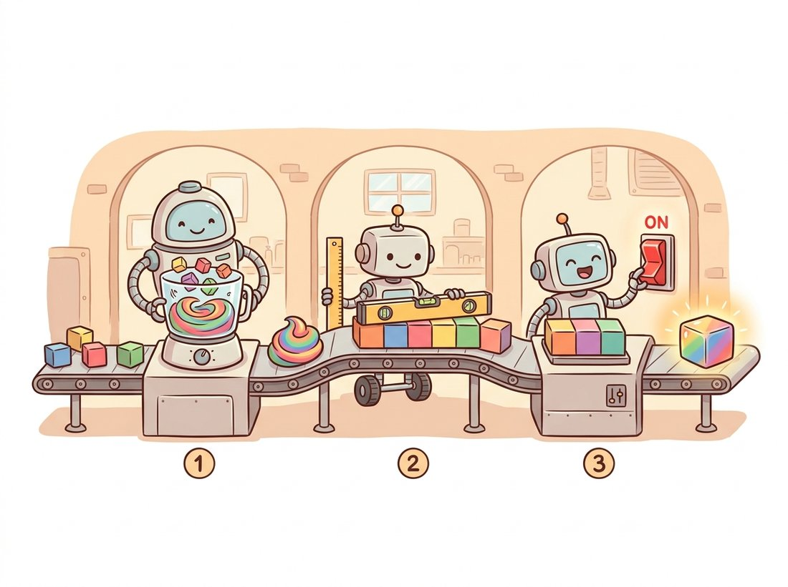

"They gave me sixty thousand tiny pictures and ten boxes to sort them into. I cried for three epochs, found the edges, found the wings, and by epoch thirty I knew a frog from a truck. Mostly."
A Recently Converged CIFAR-10 Network
This section assembles every idea in the chapter, learnable convolution, pooling, batch normalization, into one complete network and trains it end to end on CIFAR-10, reaching roughly 85 percent test accuracy in a few minutes on a single GPU. The conv-BN-ReLU block is the atom; the training loop, data augmentation, optimizer, and learning-rate schedule are the machinery that turns a randomly initialized stack into a working classifier. Nothing here is a toy abstraction; this is the actual code you would run, and the same skeleton scales to the architectures of Chapter 20.
The four preceding sections built the parts. Section 19.1 argued for convolution, Section 19.2 gave the layer, Section 19.3 the receptive field and pooling, Section 19.4 the normalization that makes depth trainable. This section spends them. We train on CIFAR-10, sixty thousand $32 \times 32$ color images in ten classes (airplane, automobile, bird, cat, deer, dog, frog, horse, ship, truck), the standard small benchmark for prototyping CNNs. The training loop is the same one introduced in Chapter 18; the new content is the convolutional architecture and the practical recipe that makes it generalize.
1. The Data: Loading and Augmenting CIFAR-10 Beginner
torchvision provides CIFAR-10 as a downloadable dataset, and the transforms pipeline handles normalization and augmentation. Two ideas from earlier in the book appear here. First, we normalize each channel by its dataset mean and standard deviation, the per-channel statistics whose computation traces back to the histograms of Chapter 2; this centers the input so the first layer (and its batch norm) starts well-conditioned. Second, we augment the training set with random crops and horizontal flips, the geometric transforms of Chapter 5 repurposed as a regularizer, and we deliberately apply augmentation only to the training split, never to the test split.
Why does a random shift or mirror regularize? Each transform produces a fresh image that keeps the same label, so the network sees a cat that is two pixels left, then mirrored, then cropped differently every epoch and can never memorize one exact pixel arrangement; it is forced instead toward features that survive these nuisances, which is precisely the position and orientation robustness a real classifier needs. The test split is left untouched because augmentation is a training-time device to expand the effective dataset, not a property of the input you want to evaluate on, so reporting accuracy on clean images measures what the model will actually face at deployment.
import torch
import torchvision
import torchvision.transforms as T
# CIFAR-10 per-channel mean and std (precomputed over the training set).
MEAN, STD = (0.4914, 0.4822, 0.4465), (0.2470, 0.2435, 0.2616)
train_tf = T.Compose([
T.RandomCrop(32, padding=4), # random shift: translation augmentation
T.RandomHorizontalFlip(), # mirror left-right (cats face both ways)
T.ToTensor(), # [0,255] HWC uint8 -> [0,1] CHW float
T.Normalize(MEAN, STD), # center and scale per channel
])
test_tf = T.Compose([T.ToTensor(), T.Normalize(MEAN, STD)]) # NO augmentation
train_set = torchvision.datasets.CIFAR10(root="./data", train=True, download=True, transform=train_tf)
test_set = torchvision.datasets.CIFAR10(root="./data", train=False, download=True, transform=test_tf)
train_loader = torch.utils.data.DataLoader(train_set, batch_size=128, shuffle=True, num_workers=2)
test_loader = torch.utils.data.DataLoader(test_set, batch_size=256, shuffle=False, num_workers=2)
print(len(train_set), len(test_set)) # Expected output: 50000 100002. The Architecture: A Stack of Conv-BN-ReLU Blocks Beginner
The network is three stages. Each stage applies two convolutional blocks, then halves the resolution. A block is the canonical trio: a convolution (with bias=False, since the following batch norm has its own shift, as Exercise 19.4.1 explained), then batch normalization from Section 19.4, then a ReLU nonlinearity (the rectified linear unit from Section 18.1, which zeros every negative activation and passes positives unchanged, supplying the nonlinearity without which a stack of convolutions would collapse to a single linear map). Channels double as resolution halves, the standard pattern that keeps roughly constant compute per stage while letting deeper layers hold more feature types. The balance is no accident: halving each spatial side quarters the number of output positions, while doubling the channels of both the input and output roughly quadruples the work per position, so the two effects cancel and each stage costs about the same. The head is global average pooling from Section 19.3 followed by a single linear classifier. Figure 19.5.1 shows the full data flow with shapes.
import torch.nn as nn
def conv_block(in_ch, out_ch, stride=1):
"""The chapter's atom: convolution (no bias), batch norm, ReLU."""
return nn.Sequential(
nn.Conv2d(in_ch, out_ch, kernel_size=3, stride=stride, padding=1, bias=False),
nn.BatchNorm2d(out_ch), # from Section 19.4; supplies the shift
nn.ReLU(inplace=True),
)
class SmallCNN(nn.Module):
def __init__(self, num_classes=10):
super().__init__()
self.features = nn.Sequential(
conv_block(3, 32), conv_block(32, 32, stride=2), # 32x32 -> 16x16
conv_block(32, 64), conv_block(64, 64, stride=2), # 16x16 -> 8x8
conv_block(64, 128), conv_block(128, 128, stride=2), # 8x8 -> 4x4
)
self.pool = nn.AdaptiveAvgPool2d(1) # global average pool -> 128x1x1
self.classifier = nn.Linear(128, num_classes) # 128 -> 10 logits
def forward(self, x):
x = self.features(x)
x = self.pool(x).flatten(1) # (N, 128, 1, 1) -> (N, 128)
return self.classifier(x)
model = SmallCNN()
n_params = sum(p.numel() for p in model.parameters())
print(f"{n_params:,} parameters") # Expected output: 288,746 parametersSmallCNN that downsamples with strided convolutions and ends in global pooling. At about 289K parameters it is two orders of magnitude smaller than the dense network of Section 19.1 and far more accurate.3. The Training Loop Intermediate
The loop is the standard supervised recipe from Chapter 18: for each batch, run a forward pass, compute the cross-entropy loss, backpropagate, and step the optimizer. The choices that matter for a CNN are the optimizer and schedule. We use SGD with momentum and weight decay, the workhorse for CNNs, and a cosine learning-rate schedule that smoothly decays the rate to near zero, which reliably squeezes out the last few accuracy points. Note the disciplined use of model.train() and model.eval() from Section 19.4, without which batch norm misbehaves at evaluation.
import torch
import torch.nn as nn
device = "cuda" if torch.cuda.is_available() else "cpu"
model = SmallCNN().to(device)
criterion = nn.CrossEntropyLoss()
optimizer = torch.optim.SGD(model.parameters(), lr=0.1, momentum=0.9, weight_decay=5e-4)
EPOCHS = 30
scheduler = torch.optim.lr_scheduler.CosineAnnealingLR(optimizer, T_max=EPOCHS)
@torch.no_grad()
def evaluate(loader):
model.eval() # freeze batch-norm stats, no dropout
correct = total = 0
for x, y in loader:
x, y = x.to(device), y.to(device)
preds = model(x).argmax(dim=1)
correct += (preds == y).sum().item()
total += y.size(0)
return 100.0 * correct / total
for epoch in range(EPOCHS):
model.train() # batch norm uses batch stats here
running = 0.0
for x, y in train_loader:
x, y = x.to(device), y.to(device)
optimizer.zero_grad()
loss = criterion(model(x), y)
loss.backward()
optimizer.step()
running += loss.item()
scheduler.step()
acc = evaluate(test_loader)
print(f"epoch {epoch+1:2d} loss {running/len(train_loader):.3f} test acc {acc:.2f}%")
# Representative tail of the run on a single modern GPU (a few minutes total):
# epoch 28 loss 0.281 test acc 84.91%
# epoch 29 loss 0.270 test acc 85.33%
# epoch 30 loss 0.262 test acc 85.46%The conv-BN-ReLU block is the chapter's atom, and it is worth memorizing as three verbs in order: mix, normalize, activate. The convolution mixes a local patch across channels into new features (Section 19.2), batch norm normalizes those features to a well-conditioned scale (Section 19.4), and ReLU activates them with the nonlinearity that keeps the stack from collapsing to one linear map. Every stage of SmallCNN, and almost every convolutional network you will meet from Chapter 20 onward, is this three-verb block repeated with the channel count rising as resolution falls. When you read an architecture diagram, you are reading mix-normalize-activate over and over, the three-station assembly line in the illustration below.

The same SmallCNN trained with a poor recipe (a too-large constant learning rate, no weight decay, no augmentation) might reach only the low seventies and overfit badly. The augmentation, the weight decay, and the learning-rate schedule are not optional polish; they are responsible for several accuracy points each. This is why Chapter 21 is devoted entirely to training recipes: in modern practice the gap between a mediocre and a strong result on the same architecture is usually the recipe, not the layers.
The epigraph is closer to the truth than it has any right to be. A freshly initialized network really does flail for the first few epochs (loss high, predictions essentially random), then discovers edges, then wings and wheels, then sorts a frog from a truck. The temptation when the early loss looks bad is to panic and add layers. Resist it. Most of the time the architecture was fine and the recipe was hungry: a schedule, some augmentation, a little weight decay. The mantra for this section: before you make the network bigger, make the training better.
4. Diagnosing Overfitting Intermediate
The most useful single plot in supervised learning is training loss and validation accuracy versus epoch. When training loss keeps falling while validation accuracy plateaus or declines, the network is overfitting: memorizing the training set rather than learning generalizable features. The remedies are exactly the regularizers in the recipe, more augmentation, more weight decay, dropout, or a smaller network, plus early stopping on the validation metric. Figure 19.5.2 shows the canonical signatures of underfitting, a healthy fit, and overfitting.
Who: A startup building a plant-disease classifier from phone photos taken by farmers.
Situation: Their CNN reached 98 percent on a held-out split of their collected dataset and looked ready to ship.
Problem: In a field pilot, accuracy fell to the low sixties. Inspection revealed the training photos for each disease had been collected on the same few days with the same lighting and backgrounds, so the network had partly learned background and color-cast cues rather than the lesions. Its own validation split shared those spurious cues, so the validation accuracy was optimistic, a between-the-lines case of the overfitting signature in Figure 19.5.2 hidden by a leaky split.
Decision: Rebuild the validation split to hold out entire collection sessions (so background and lighting could not leak), then aggressively augment with color jitter, random crops, and the random erasing of Chapter 21 to force reliance on lesion structure.
Result: Reported validation accuracy dropped to a believable 88 percent, but field accuracy rose to 86 percent, finally matching the lab number. The honest split and stronger augmentation closed the gap between benchmark and reality.
Lesson: A high validation number means nothing if the split leaks the spurious cues the test will not contain. Augmentation that attacks the spurious cue, and a split that mirrors deployment, are what make a CNN generalize, exactly the regularization themes this section's recipe embodies.
If your goal is a working classifier rather than a teaching exercise, skip the from-scratch architecture entirely. torchvision.models.resnet18(weights=None, num_classes=10) gives a stronger network in one line; loading weights="IMAGENET1K_V1" and fine-tuning (the transfer learning of Chapter 21) reaches well over 95 percent on CIFAR-10. The training-loop boilerplate, the loop, AMP mixed precision, checkpointing, logging, also has library answers: PyTorch Lightning or the Hugging Face Trainer replace roughly a hundred lines of loop code with a configured object. Build the loop once by hand to own it, as this section does, then graduate to the framework for real projects.
CIFAR-10 remains a live benchmark for training efficiency rather than peak accuracy. The "CIFAR-10 speedrun" community, anchored by Keller Jordan's airbench and tracked publicly through 2024-2025, trains small ResNet-style CNNs to 94 percent in under ten seconds on a single GPU using aggressive techniques: whitening the input with a fixed first layer, label smoothing, lookahead-style optimizers, and test-time augmentation. The lesson is that the architecture in this section is near the efficient frontier for the parameter budget, and most remaining gains come from the optimization and data recipe of Chapter 21 rather than from more layers, a striking confirmation that on small data the recipe dominates.
You have now trained a real convolutional network from random weights to competitive accuracy, exercising every concept in the chapter. The natural next question is what those 289 thousand learned numbers actually became. Section 19.6 opens the trained model and answers it, visualizing the filters, feature maps, and class evidence and confirming that the network rediscovered the edge detectors of Chapter 3 on its own.
You train SmallCNN and observe: training accuracy 99 percent, test accuracy 78 percent, and a test-accuracy curve that peaked at epoch 20 and declined thereafter. Diagnose the condition using Figure 19.5.2, then list three distinct changes (one to the data, one to the optimizer, one to the architecture or training duration) that would each be expected to raise the test accuracy, and predict the direction each would push the train-test gap.
Train two variants of SmallCNN for 15 epochs each: one with the batch-norm layers removed from conv_block, and one with them kept. Plot or print test accuracy per epoch for both. Report the difference in final accuracy and in how many epochs each takes to first exceed 70 percent, and connect your observation to the claims about training speed and stability in Section 19.4.
After training, build the $10 \times 10$ confusion matrix on the CIFAR-10 test set (rows true class, columns predicted). Identify the two class pairs the network confuses most often, look at a handful of the misclassified images, and explain in terms of the feature hierarchy of Section 19.3 why those particular classes (for example cat and dog) are harder to separate than others (for example ship and frog). Propose one targeted change that would most help the confused pair.